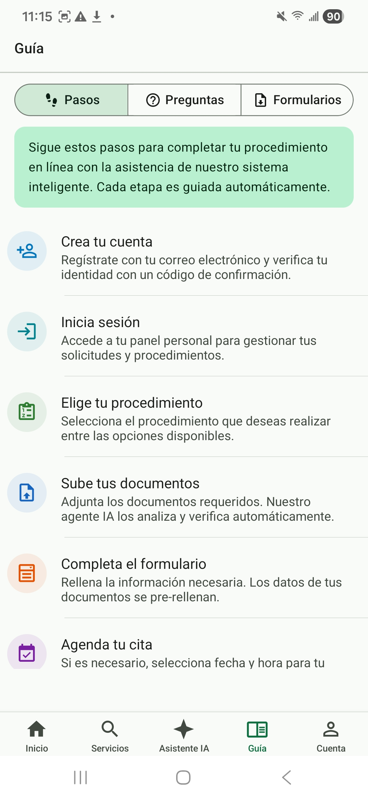
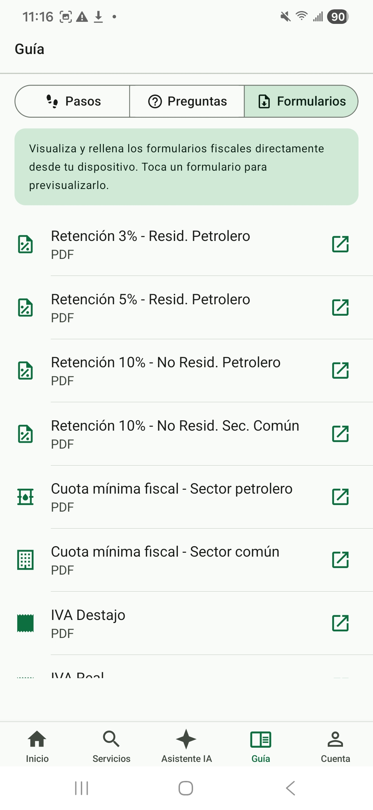

Guía rápida de Facil
La guía integrada en Facil le acompaña en sus primeros pasos. Tres pestañas: pasos a seguir para iniciar un trámite, preguntas frecuentes (FAQ), formularios oficiales descargables. Acceso público sin sesión.
1. Pestaña «Pasos» — guía paso a paso
La pestaña «Pasos» enumera los 6 pasos genéricos para realizar cualquier trámite en Facil:
- Crear su cuenta — verificación por email + opción de añadir 2FA
- Iniciar sesión — con email y contraseña, opcionalmente con biometría en móvil
- Elegir su trámite — desde el catálogo, las sugerencias del asistente IA o la búsqueda
- Subir los documentos requeridos — foto desde el móvil o subida de archivos PDF/JPG. El OCR extrae automáticamente los datos.
- Rellenar el formulario — la mayoría de los campos están prerellenados con los datos OCR. Verifique y complete.
- Programar la cita — elija oficina, fecha y hora entre los disponibles, luego pague.

2. Pestaña «Preguntas frecuentes»
La FAQ contiene 6 preguntas cuya respuesta se despliega al pulsarlas. Las preguntas tratan los temas más frecuentes:
- ¿Necesito una cuenta para todo? — No, los servicios públicos (catálogo, calculadora, simulador, asistente IA, verificación) son accesibles sin sesión.
- ¿Cómo cambio de idioma? — Selector ES/FR/EN en la cabecera, en cualquier momento.
- ¿Puedo pagar en efectivo? — Sí, en la oficina del Tesoro Público. La solicitud genera una referencia que presenta en caja.
- ¿Cuánto tiempo dura el tratamiento? — Variable según el trámite (de 24h para una verificación a 15 días para una licencia compleja). El plazo está indicado en la ficha de cada servicio.
- ¿Mis datos están seguros? — Sí, conforme RGPD. Cifrado en tránsito (HTTPS) y en reposo. Ver página legal y página seguridad.
- ¿Qué pasa si pierdo mi cuenta? — Use «Contraseña olvidada» en la pantalla de inicio de sesión. Si pierde acceso al email también, contacte con soporte.
3. Pestaña «Formularios» — descargas oficiales
La pestaña Formularios da acceso a los formularios fiscales oficiales en PDF que puede descargar, rellenar y luego subir en su solicitud. Lista de formularios disponibles:
- Retención 3%, 5%, 10% — formularios de retención fiscal para empleadores
- Cuota mínima — declaración de la cuota mínima IS
- IVA Forfaitaire / IVA Real — declaraciones IVA según el régimen
- IRPF — declaración anual del impuesto sobre la renta
- Otros formularios sectoriales — petrolero, mineros, agrícolas
